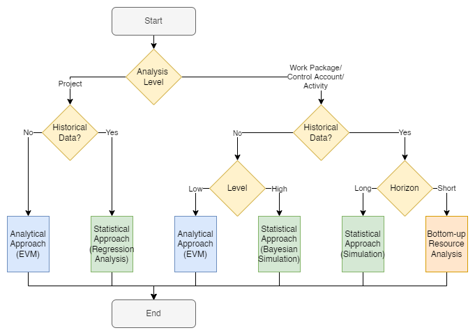
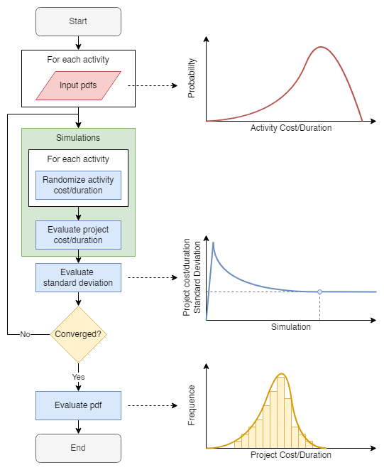
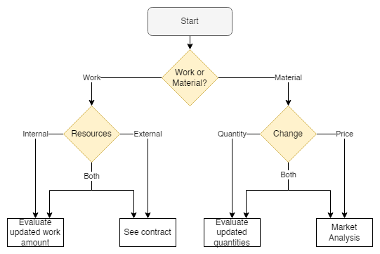

Estimates at Completion#
Overview#
The following page describes the approaches that can be adopted to forecast a project’s cost or duration at completion, which we will refer to as cEAC and sEAC, respectively.
Figure 1 provides the flowchart that prescribes the suggested approach by investigating a series of aspects related to the project control.
 |
|---|
Figure 1 — EAC approaches flowchart |
The first decision concerns the level at which the estimates are made (analysis level).
If enough information is available for each control account, work package, or activity level, a detailed analysis can be made.
The project cEAC is given by the sum of the individual control account, work package, or activity forecast.
Instead, the project sEAC corresponds to the duration of the revised critical path.
Instead, if the project size does not allow, on a practical level, for a detailed one-by-one analysis or no information is available, forecasts can only be done at the project level.
In both cases, the next decision involves the availability and quality of historical data upon which infer the required information about project costs/durations.
When the quality of data is deemed insufficient or no data is available at all, it is not possible to treasure the information that comes from the project’s external environment to improve the reliability of the cost and schedule forecasts.
In the opposite case, there can be considerations about the project outcome without taking assumptions that may be questionable or may prove either right or wrong throughout the project execution.
From the project perspective, if no data is available or its quality is insufficient, the suggested approach is the analytical application of the EVM concepts.
Instead, if data is available, a statistical approach (e.g., regression analysis) can be adopted.
From the activity perspective, if no data is available, the next decision involves the level of reliability one wants to achieve.
If assumptions can be made about the past performance reflecting the future one, the analytical approach by EVM can be used to quantify the cost and schedule performance indexes to date and compute the cEAC or sEAC.
When such an assumption does not hold, one can make use of Bayesian probability.
When historical data is present, one must further investigate its horizon of reliability.
For near future activities, information can be inferred from sources external to the project system.
For long-term activities, cost and duration distributions can be fit on the past data and used to simulate the project outcomes.
Project-level#
Analytical Approach#
The project-level analytical approach consists of the EVM methodology applied to the accrued project \(PV\), \(EV\), and \(AC\).
If cost and schedule overruns are considered to be recoverable,
and
.
Otherwise, the physical formulation for the EAC is
where
If cost,
If schedule,
\(cPF{(t)}\) and \(sPF{(t)}\) both depend on the assumptions made, as follows.
Formula |
Assumption |
|---|---|
\(xPF{(t)} = 1\) |
A one-time cost/schedule overrun cannot be recovered |
\(xPF{(t)} = f \left( t, PV{(t)}, EV{(t)}, AC{(t)} \right)\) |
The future performance will reflect, somehow, the actual performance |
Any combinations of the EVM variables can be used to compute the \(f\). Examples include, but are not limited to:
punctual values
\(CPI{(t)}\) for \(cPF{(t)}\)
\(SPI^\text{t}{(t)}\) for \(sPF{(t)}\)
\(CPI{(t)} \cdot SPI{(t)}\) for both \(xPF{(t)}\)
\(w_{CPI} \cdot CPI{(t)} + w_{SPI} \cdot SPI{(t)}\) where \(w_{CPI} + w_{SPI} = 1\)
etc.
calculated values
weighted/moving average
smoothing
etc.
Statistical Approach#
The project-level statistical approach proposed is based on regression modeling.
A regression model can be represented through the following equation,
where \(y\) is the dependent variable, \(X\) is the matrix of explanatory variables, and \(\varepsilon\) is the random additive error.
Regression analysis aims to evaluate the function \(\widehat{f}\) that best approximates \(f\).
Methods#
Two alternative methods to evaluate the EACs are proposed.
The dependent variable is set to the EAC,
It is difficult for regression models to understand how different combinations of the \(X\) variables lead to the same value of \(xEAC\), since it’s unique for each project in the dataset.
2. The dependent variable is set to the PF that would provide, at time \(t\), the exact EAC,
Setting the problem in such a way allows for evaluating a different \(xPF{(t)}\) for each time \(t\), which is the result of a combination of the project control metrics.
Activity-level#
Analytical Approach#
The activity-level analytical approach consists of the EVM methodology applied to the accrued activity \(PV\), \(EV\), and \(AC\).
To compute the cEAC, one must sum the individual cEACs, as follows:
where
To compute the sEAC, one must sum the individual sEACs of the activities belonging to the different paths and evaluate the new critical path, as follows:
where
Statistical Approach#
The activity-level statistical approach is based on the assumed distributions of the activities’ cost and duration probability density functions (PDF).
The Bayesian inference can be called in case such distributions are hypothesized a priori without historical data to be fitted to.
Otherwise, regular Monte Carlo simulations can be performed.
The Monte Carlo simulation applied to the project cost and duration evaluation is performed as follows.
 |
|---|
Figure 2 — (Bayesian) simulation approach flowchart |
The cost/duration PDF for each activity must be assumed or inferred from the data.
An arbitrary number of simulations is then conducted.
Within each simulation, all activities’ cost/duration are randomized.
The total project cost is the sum of all the (remaining) activities costs.
Instead, the total project duration is the maximum duration among all the different paths of activities revised durations.
The simulation stopping criterion is given by the convergence of the standard deviation of the resulting project cost/duration.
Plotting the histogram of the resulting project cost/duration allows for the identification of its PDF.
Long-Term Statistical Approach#
The activity-level long-term statistical approach consists of the same (Bayesian) Monte Carlo simulation framework.
The only difference is in the PDF of the activities cost/duration, which is not hypothesized a priori but rather inferred from the historical data.
Activity-level Short-Term Resource Analysis#
A bottom-up approach is suggested when the forecast of the project cost/duration involves activities that are currently or will be carried out shortly, rather than projecting their outcome through analytical or statistical means.
 |
|---|
Figure 3 — Bottom-up cost/durations considerations |
In this regard, we recall that the activities for which it is required to compute the revised cost/duration are either labor intensive or material intensive.
In the former case, if work resources are internal to the organization, the activity cost will reflect its revised duration; if work resources are external to the organization, the cost depends on the contract scheme for that specific activity.
In the latter case, the cost of the material resources may depend on two factors.
A market analysis must be conducted if the same amount of resources is needed, but their price is changed.
When the initial estimate of the amount of materials required proves inaccurate, the variation in cost/time will reflect the new estimate for the quantity of material.